| 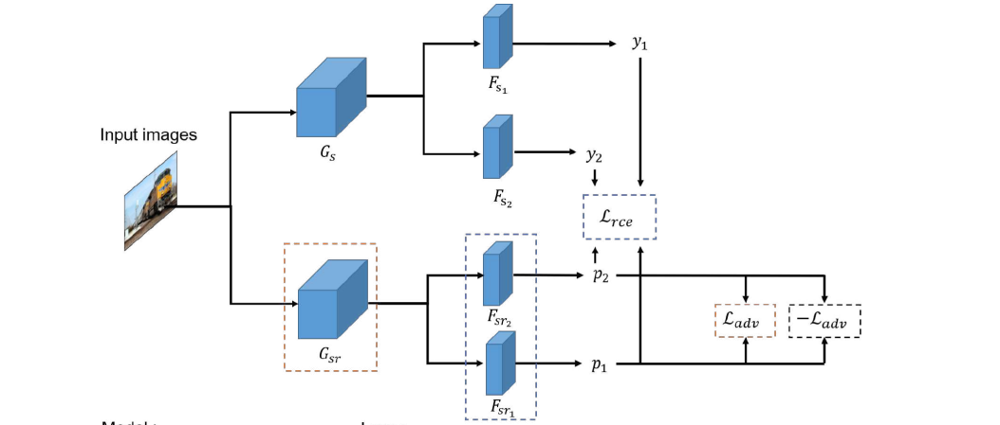 |
Denoised Maximum Classifier Discrepancy for Source-Free Unsupervised Domain
Adaptation.
Tong Chu, Yahao Liu, Jinhong Deng, Wen Li, Lixin
Duan.
AAAI Conference on Artificial Intelligence (AAAI), 2022.
[Paper] |
| 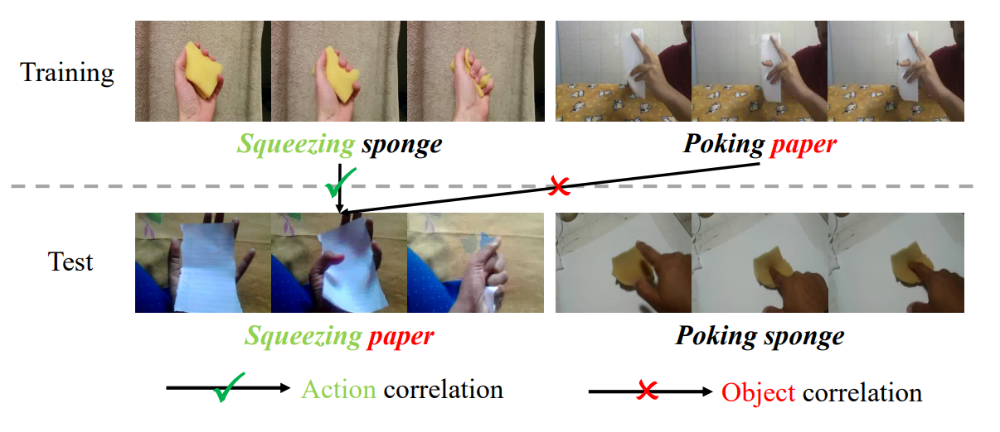 |
Counterfactual Debiasing Inference for Compositional Action Recognition
Pengzhan Sun, Bo Wu, Xunsong Li, Wen Li, Lixin Duan, Chuang Gan.
ACM International Conference on Multimedia(MM), 2021.
[Paper] |
| 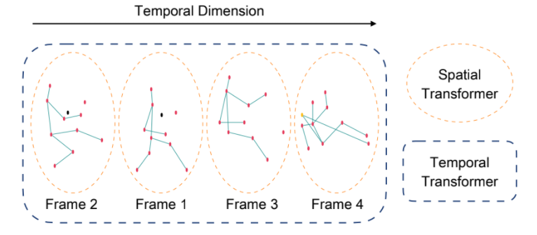 |
STST: Spatial-Temporal Specialized Transformer for Skeleton-based Action
Recognition
Yuhan Zhan, Bo Wu, Wen Li, Lixin Duan, Chuang Gan.
ACM International Conference on Multimedia(MM), 2021.
[Paper]
|
| 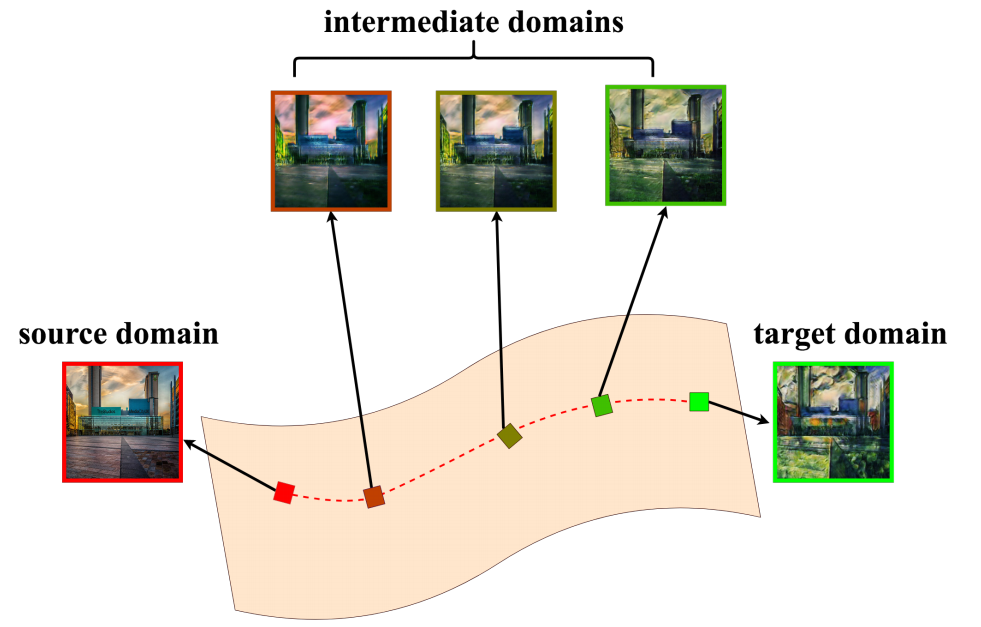 |
DLOW: Domain Flow and Applications.
Rui Gong, Wen Li*, Yuhua Chen, Dengxin Dai, Luc Van Gool.
International Journal of Computer Vision(IJCV), accepted, 2021.
[Paper]
|
| 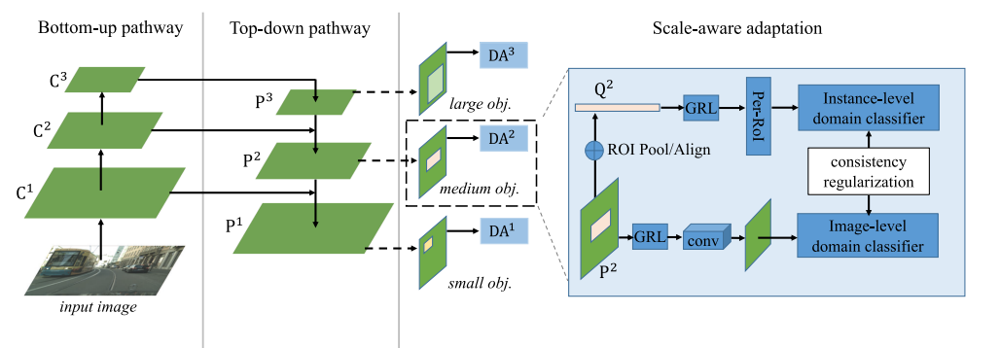 |
Scale-Aware Domain Adaptive Faster RCNN.
Yuhua Chen, Haoran Wang, Wen Li*, Christos Sakaridis, Dengxin
Dai, Luc Van Gool.
International Journal of Computer Vision(IJCV), vol. 129, pp. 2223-2243, 2021.
[Paper] [Code]
|
| 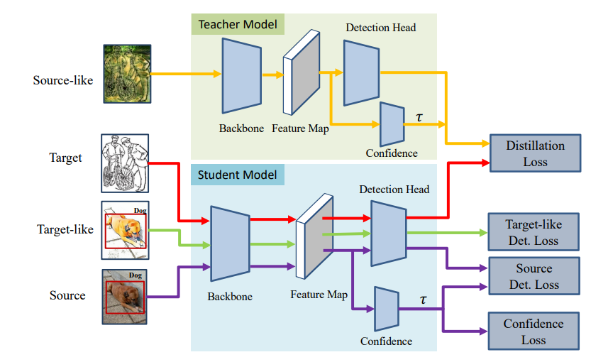 |
Unbiased Mean Teacher for Cross Domain Object Detection.
Jinhong Deng, Wen Li, Yuhua Chen, Lixin Duan.
IEEE International Conference on Computer Vision and Pattern Recognition(CVPR), 2021.
[Paper] [Code] |
| 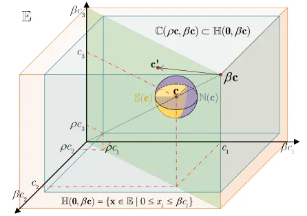 |
The Heterogeneity Hypothesis: Finding Layer-wise Dissimilated Network
Architecture.
Yawei Li, Wen Li, Martin Danelljan, Kai Zhang, Shuhang
Gu, Luc Van Gool, Radu Timofte。
IEEE International Conference on Computer Vision and Pattern Recognition(CVPR), 2021.
[Paper] [Code] |
| 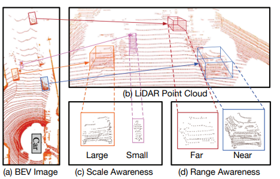 |
SRDAN: Scale-aware and Range-aware Domain Adaptation Network for Cross-dataset
3D Object Detection.
Weichen Zhang, Wen Li, Dong Xu.
IEEE International Conference on Computer Vision and Pattern Recognition(CVPR), 2021.
[Paper]
[Code] |
| 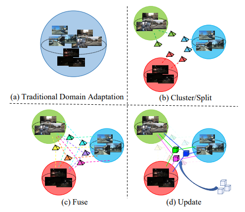 |
Cluster, Split, Fuse, and Update: Meta-Learning for Open Compound Domain
Adaptive Semantic Segmentation.
Rui Gong, Yuhua Chen, Danda Pani Paudel, Yawei Li, Ajad
Chhatkuli, Wen Li, Dengxin Dai, Luc Van Gool.
IEEE International Conference on Computer Vision and Pattern Recognition(CVPR), 2021.
[Paper] [Code] |
| 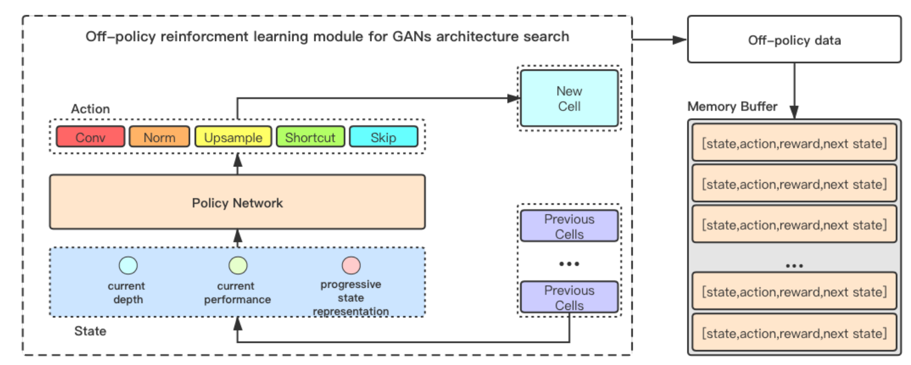 |
Off-policy Reinforcement Learning for Efficient and Effective GAN Architecture
Search.
Yuan Tian, Qin Wang, Zhiwu Huang, Wen Li, Dengxin
Dai, Minghao Yang, Jun Wang, Olga Fink
European Conference on Computer Vision(ECCV), 2020.
[Paper] [Code] |
| 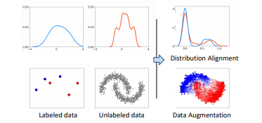 |
Semi-Supervised Learning by Augmented Distribution Alignment.
Qin Wang, Wen Li, Luc Van Gool.
IEEE International Conference on Computer Vision(ICCV),2019 (oral).
[Paper] [Code] |
| 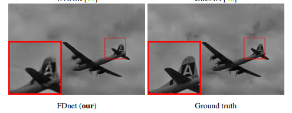 |
Fast Image Restoration Networks with Multi-bin Trainable Linear Unit.
Shuhang Gu, Wen Li, Luc Van Gool, Radu Timofte.
IEEE International Conference on Computer Vision(ICCV),2019.
[Paper] [Code] |
| |
DLOW: Domain Flow for Adaptation and Generalization
Rui Gong, Wen Li*, Yuhua Chen, Luc Van
Gool
IEEE International Conference on Computer Vision and Pattern Recognition(CVPR),2019 (oral).
[Paper ]
[ Code ] |
| 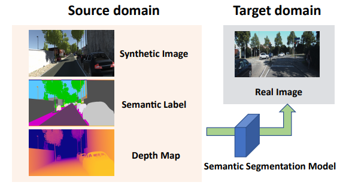 |
Learning Semantic Segmentation from Synthetic Data: A Geometrically Guided
Input-Output Adaptation Approach.
Yuhua Chen, Wen Li*, Xiaoran Chen, Luc Van Gool
IEEE International Conference on Computer Vision and Pattern Recognition
(CVPR),2019.
[
Paper ] [ Code ] |
| 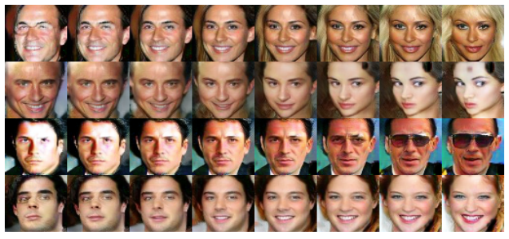 |
Sliced Wasserstein Generative Models.
Jiqing Wu, Zhiwu Huang, Dinesh Acharya, Wen
Li, Janine Thoma, Danda Paudel, Luc Van Gool.
IEEE International Conference on Computer Vision and Pattern Recognition
(CVPR),2019.
[
Paper ] [ Code ] |
| 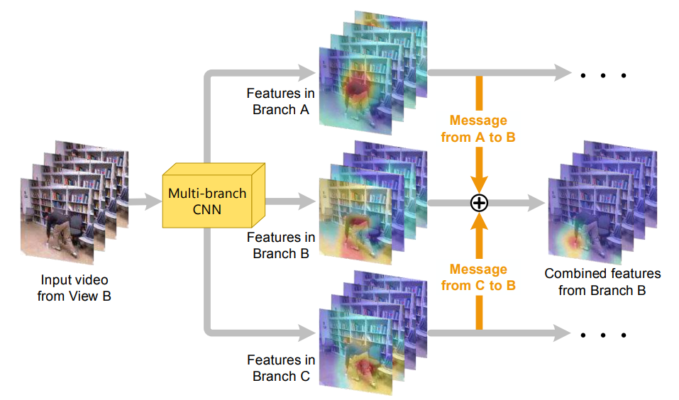 |
Dividing and Aggregating Network for Multi-view Action Recognition
Dongang Wang, Wanli Ouyang, Wen Li, and Dong Xu
European Conference on Computer Vision (ECCV), 2018.
[Paper]
|
| 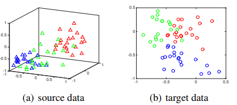 |
Semi-Supervised Optimal Transport for Heterogeneous Domain Adaptation
Yuguang Yan*, Wen Li*, Hanrui Wu, Huaqing Min, Mingkui Tan,
Qingyao Wu (* contributed equally)
International Joint Conference on Artificial Intelligence (IJCAI), 2018.
[Paper][ Code ] |
| 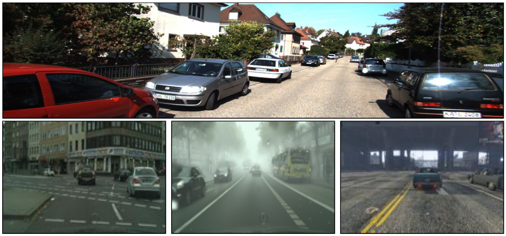 |
Domain Adaptive Faster R-CNN for Object Detection in the Wild
Yuhua Chen, Wen Li*, Christos Sakaridis, Dengxin Dai, and Luc
Van Gool
IEEE International Conference on Computer Vision and Pattern Recognition
(CVPR),2018.
[Paper][Code] |
| 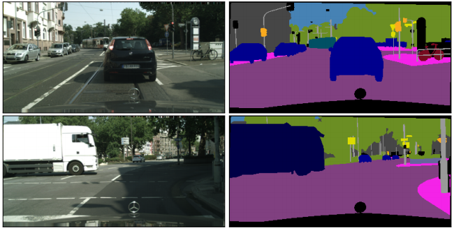 |
ROAD: Reality Oriented Adaptation for Semantic Segmentation of Urban
Scenes
Yuhua Chen, Wen Li*, and Luc Van Gool
IEEE International Conference on Computer Vision and Pattern Recognition
(CVPR),2018.
[Paper][ Code ] |
 |
Appearance-and-Relation Networks for Video Classification
Limin Wang, Wei Li, Wen Li, and Luc Van Gool
IEEE International Conference on Computer Vision and Pattern Recognition
(CVPR),2018.
[Paper][Code] |
| 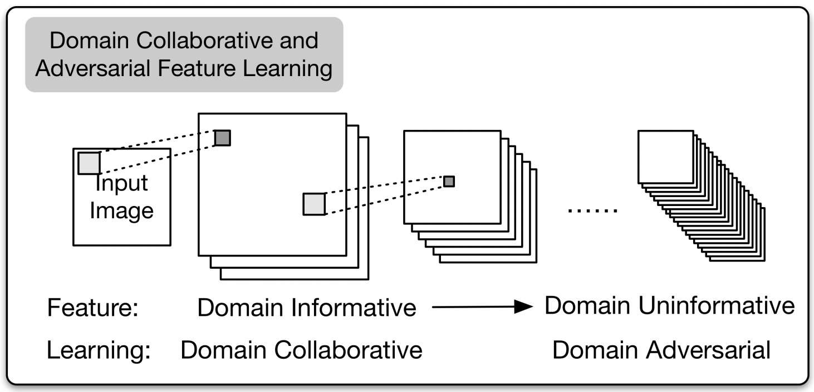 |
Collaborative and Adversarial Network for Unsupervised Domain Adaptation
Weichen Zhang, Wanli Ouyang, Wen Li, and Dong Xu
IEEE International Conference on Computer Vision and Pattern Recognition(CVPR),2018 (spotlight).
[Paper][Code] |
| 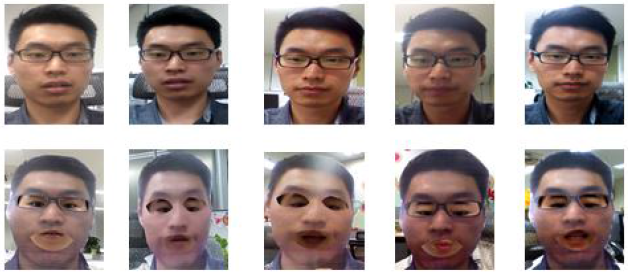 |
Unsupervised Domain Adaptation for Face Anti-Spoofing
Haoliang Li, Wen Li, Hong Cao, Shiqi Wang, Feiyue Huang, Alex C
Kot
IEEE Transactions on Information Forensics and Security(T-IFS), vol. 13(7), pp.
1794-1809, July 2018.
[Paper][ Dataset] |
 |
Domain Generalization and Adaptation using Low Rank Exemplar SVMs
Wen Li, Zheng Xu, Dong Xu, Dengxin Dai, and Luc Van Gool
IEEE Transactions on Pattern Analysis and Machine Intelligence (T-PAMI), vol. 40(5),
pp. 1114-1127, May 2018.
[PDF][Supplementary] |
| 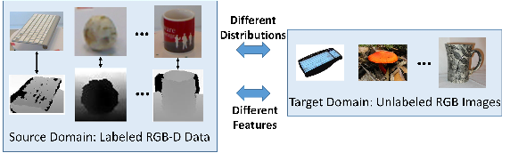 |
Visual Recognition in RGB Images and Videos by Learning from RGB-D Data
Wen Li, Lin Chen, Dong Xu, and Luc Van Gool
IEEE Transactions on Pattern Analysis and Machine Intelligence (T-PAMI), vol. 40(8),
pp. 2030-2036, Aug. 2018.
[PDF] |
| 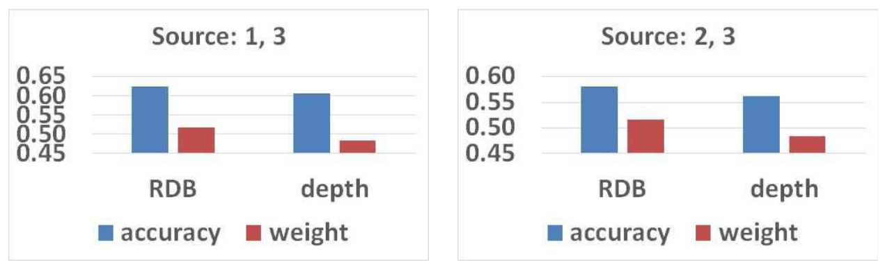 |
An Exemplar-Based Multi-View Domain Generalization Framework for Visual
Recognition
Li Niu, Wen Li, Dong Xu, and Jianfei Cai
IEEE Transactions on Neural Networks and Learning Systems (T-NNLS), vol. 29(2), pp.
259-272, Feb. 2018.
[PDF][Code] |
| 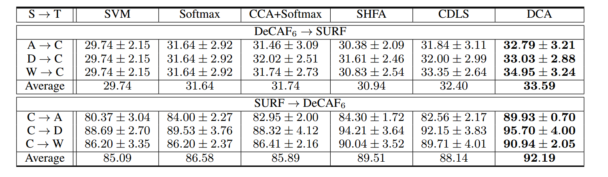 |
Learning Discriminative Correlation Subspace for Heterogeneous Domain
Adaptation
Yuguang Yan*, Wen Li*, Michael Ng, Mingkui Tan, Hanrui Wu,
Huaqing Min, and Qingyao Wu. (* contributed equally)
International Joint Conference on Artificial Intelligence (IJCAI), 2017.
[PDF] |
| 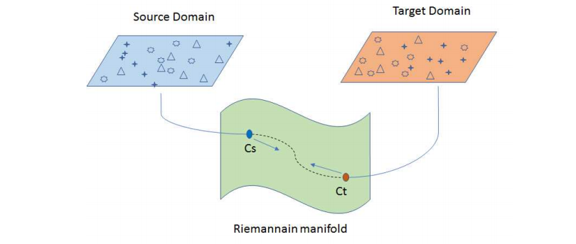 |
Deep Domain Adaptation by Geodesic Distance Minimization
Yifei Wang, Wen Li, Dengxin Dai, and Luc Van Gool
ICCV 2017 Workshop on Transferring and Adapting Source Knowledge in Computer Vision (TASK-CV),
2017.
[PDF]
[Code] |
| 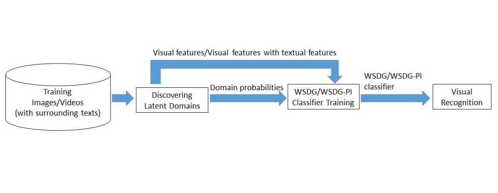 |
Visual Recognition by Learning from Web Data via Weakly Supervised Domain
Generalization
Li Niu, Wen Li, Dong Xu, and Jianfei Cai
IEEE Transactions on Neural Networks and Learning Systems (T-NNLS), vol. 28(9), pp.
1985-1999, Sept. 2017.
[PDF][Code] |
| 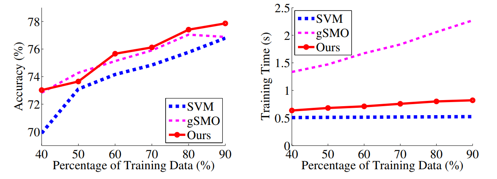 |
Fast Algorithms for Linear and Kernel SVM+
Wen Li, Dengxin Dai, Mingkui Tan, Dong Xu, and Luc Van Gool.
IEEE International Conference on Computer Vision and Pattern Recognition
(CVPR),2016.
[PDF] [Code][Errata] |
| 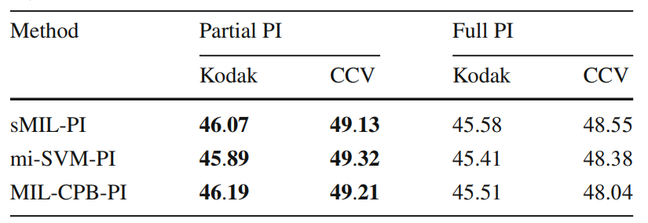 |
Exploiting Privileged Information from Web Data for Action and Event
Recognition
Li Niu, Wen Li*, and Dong Xu (* correspondng author)
International Journal of Computer Vision (IJCV) , vol. 118(2), pp. 130-150, Jun.
2016.
[PDF][Code]
|
| 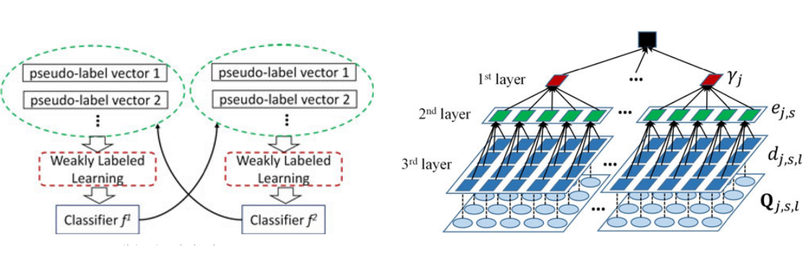 |
Co-Labeling for Multi-view Weakly Labeled Learning
Xinxing Xu*, Wen Li*,Dong Xu, and Ivor Tsang (* contributed
equally).
IEEE Transactions on Pattern Analysis and Machine Intelligence (T-PAMI), vol. 38(6),
pp. 1113-1125, Jun 2016.
[PDF] |
| 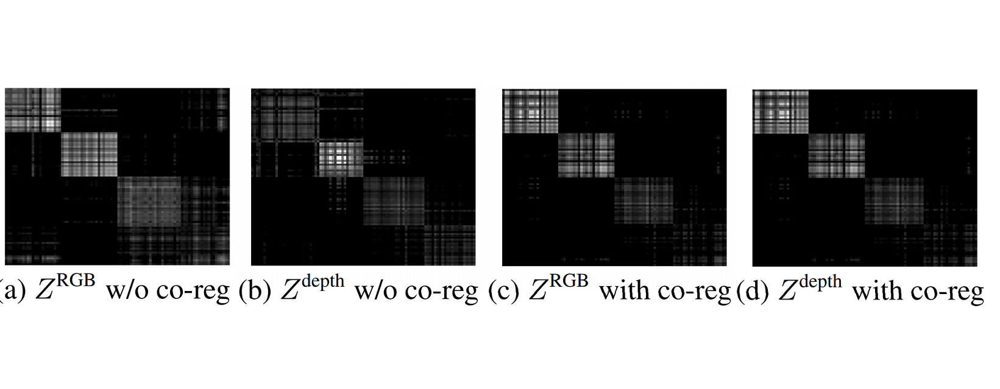 |
Multi-view Domain Generalization for Visual Recognition
Li Niu, Wen Li, and Dong Xu.
IEEE International Conference on Computer Vision(ICCV), 2015.
[PDF][Code][Slides] |
| 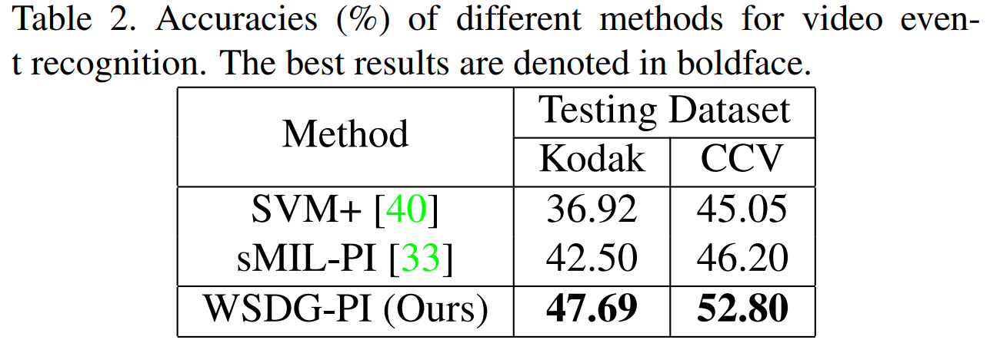 |
Visual Recognition by Learning From Web Data: A Weakly Supervised Domain
Generalization Approach
Li Niu, Wen Li, and Dong Xu.
IEEE International Conference on Computer Vision and Pattern Recognition(CVPR), pp.
2774-2783 ,2015.
[PDF][Code][Slides] |
| 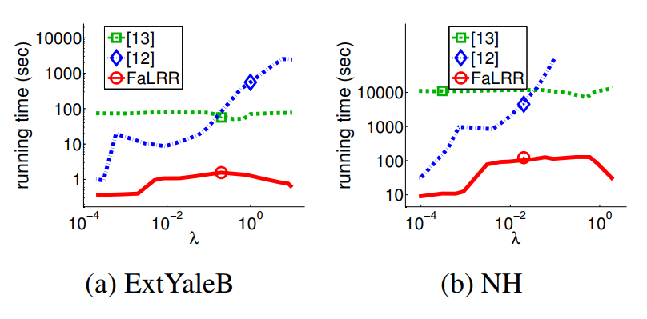 |
FaLRR: A Fast Low Rank Representation Solver
Shijie Xiao, Wen Li, Dong Xu, and Dacheng Tao.
IEEE International Conference on Computer Vision and Pattern Recognition(CVPR), pp.
4612-4620, 2015.
[PDF]
|
| 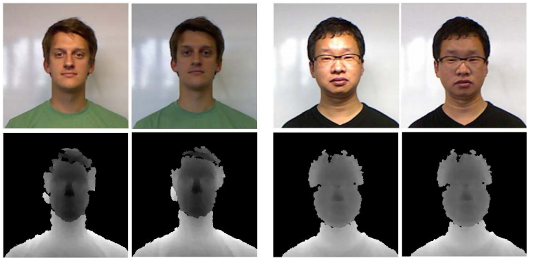 |
Distance Metric Learning using Privileged Information for Face Verification
and Person Re-identification
Xinxing Xu, Wen Li, Dong Xu
IEEE Transactions on Neural Networks and Learning Systems (T-NNLS), vol. 26(12), pp.
3150-3162, Dec 2015.
[PDF][Code]
|
| 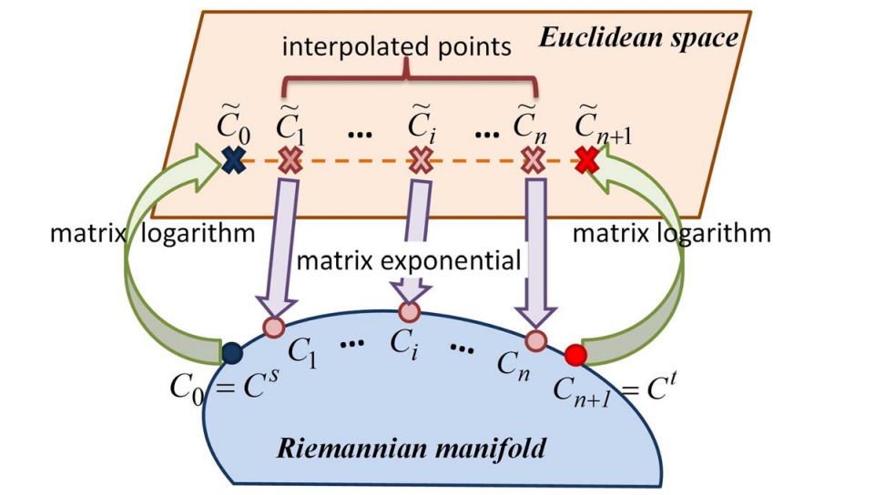 |
Flowing on Riemannian Manifold: Domain Adaptation by Shifting Covariance
Zhen Cui, Wen Li, Dong Xu, Shiguang Shan, Xilin Chen, and
Xuelong Li
IEEE Transactions on Cybernetics , vol. 44(12), pp. 2264-2273, Nov 2014.
[PDF] |
| 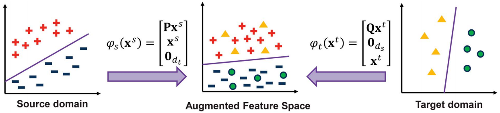 |
Learning with Augmented Features for Supervised and Semi-supervised
Heterogeneous Domain Adaptation
Wen Li, Lixin Duan, Dong Xu, and Ivor W.H. Tsang.
IEEE Transactions on Pattern Analysis and Machine Intelligence (T-PAMI), vol. 36(6),
pp. 1134-1148, JUN 2014.
[PDF] [Supplementary][Code]
|
| 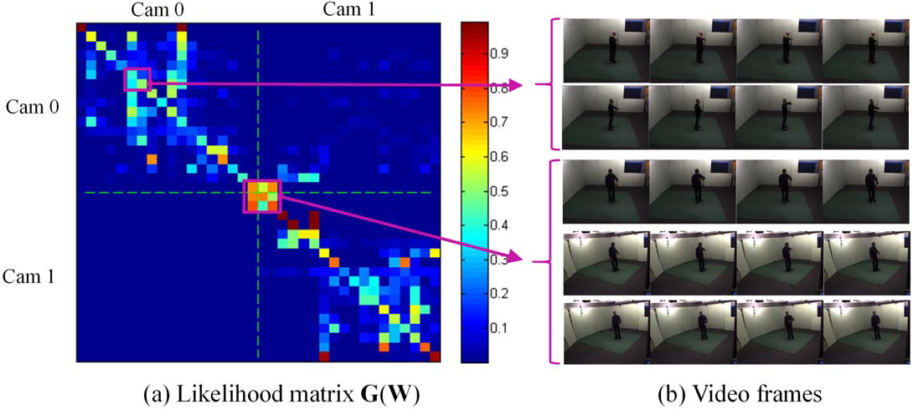 |
Exploiting Low-rank Structure from Latent Domains for Domain
Generalization
Zheng Xu, Wen Li, Li Niu, and Dong Xu.
European Conference on Computer Vision,(ECCV), pp. 628-643, 2014.
[PDF][Code][Slides] |
| 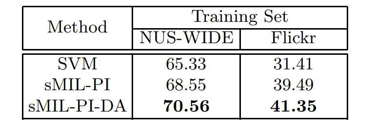 |
Exploiting Privileged Information from Web Data for Image Categorization
Wen Li*, Li Niu*, and Dong Xu.(* contributed equally)
European Conference on Computer Vision,(ECCV), pp. 437-452, 2014.
[PDF][Code][Slides] |
| 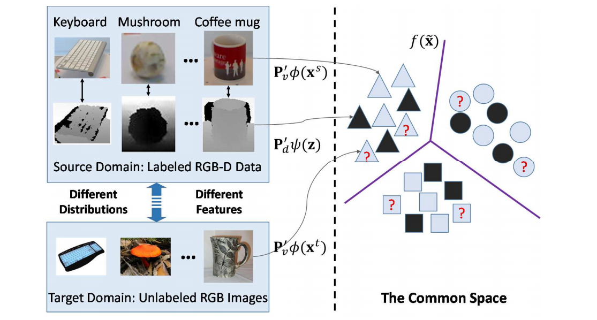 |
Recognizing RGB Images by Learning from RGB-D Data
Lin Chen, Wen Li, and Dong Xu
IEEE International Conference on Computer Vision and Pattern Recognition(CVPR), pp.
1418-1425, 2014.
[PDF] |
| 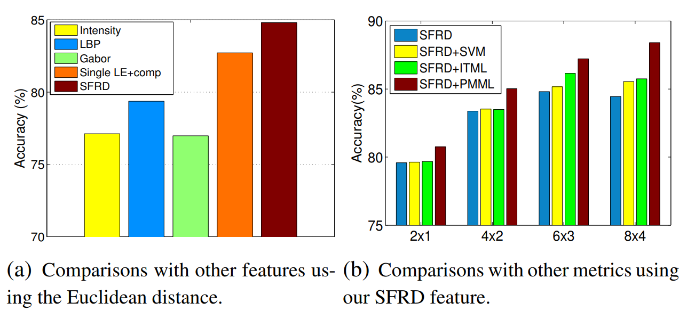 |
Fusing Robust Face Region Descriptors via Multiple Metric Learning for Face
Recognition in the Wild
Zhen Cui, Wen Li, Dong Xu, Shiguang Shan and Xilin Chen
IEEE International Conference on Computer Vision and Pattern Recognition(CVPR), pp.
3554-3561, 2013.
[PDF] [Code][ROC_LFW, ROC_YTF] |
| 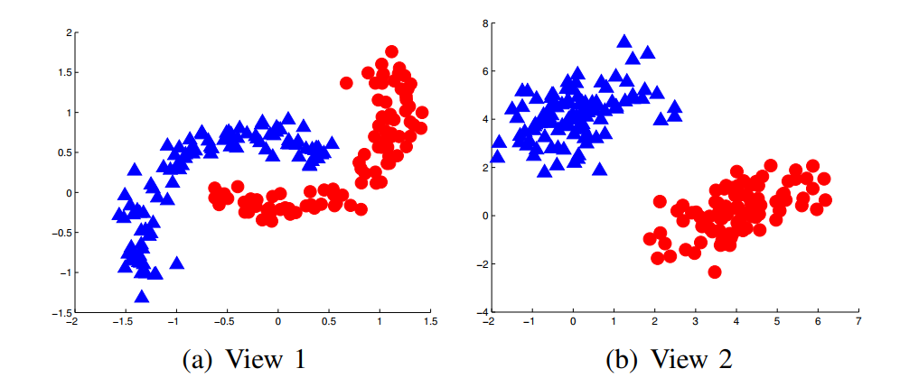 |
Co-Labeling: A New Multi-View Learning Approach for Ambiguous Problems
Wen Li, Lixin Duan, Ivor W.H. Tsang, and Dong Xu
IEEE International Conference on Data Mning (ICDM), pp. 419-428, 2012. (full paper)
[PDF][Slides] |
| 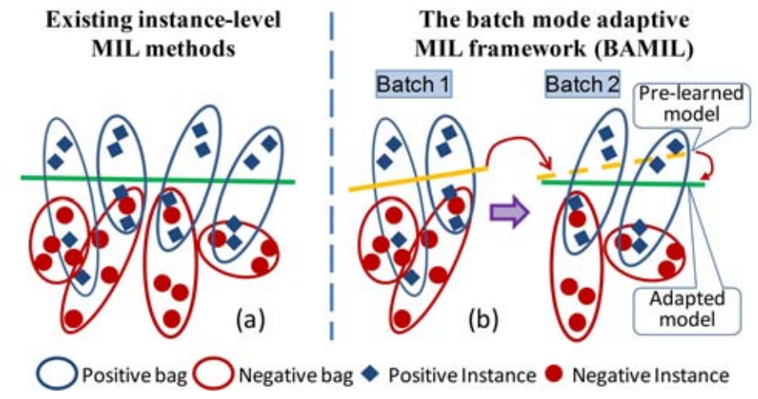 |
Batch Mode Adaptive Multiple Instance Learning for Computer Vision Tasks
Wen Li, Lixin Duan, Ivor W.H. Tsang, and Dong Xu
IEEE International Conference on Computer Vision and Pattern Recognition(CVPR), pp.
2368-2375, 2012.
[PDF] |
| 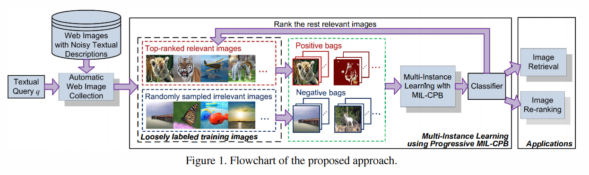 |
Text-based Image Retrieval Using Progressive Multi-Instance Learning
Wen Li, Lixin Duan, Dong Xu and Ivor W.H. Tsang
IEEE International Conference on Computer Vision(ICCV), pp. 2049-2055, 2011.
[PDF][ indices of relevant images]
|
| 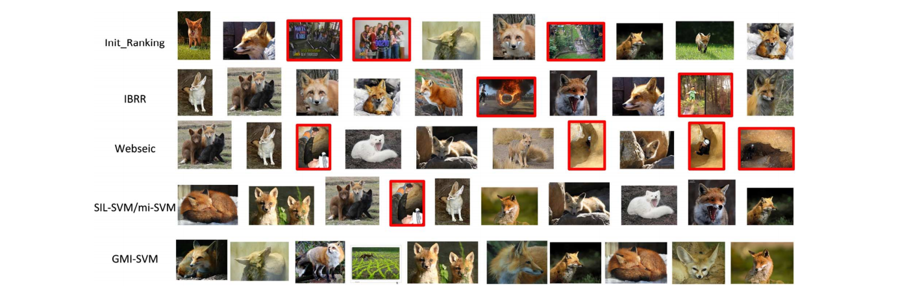 |
Improving Web Image Search by Bag-based Re-ranking
Lixin Duan, Wen Li, Ivor W.H. Tsang, and Dong Xu.
IEEE Transactions on Image Processing (T-IP), vol. 20(11), pp. 3280-3290, NOV 2011.
[PDF] |